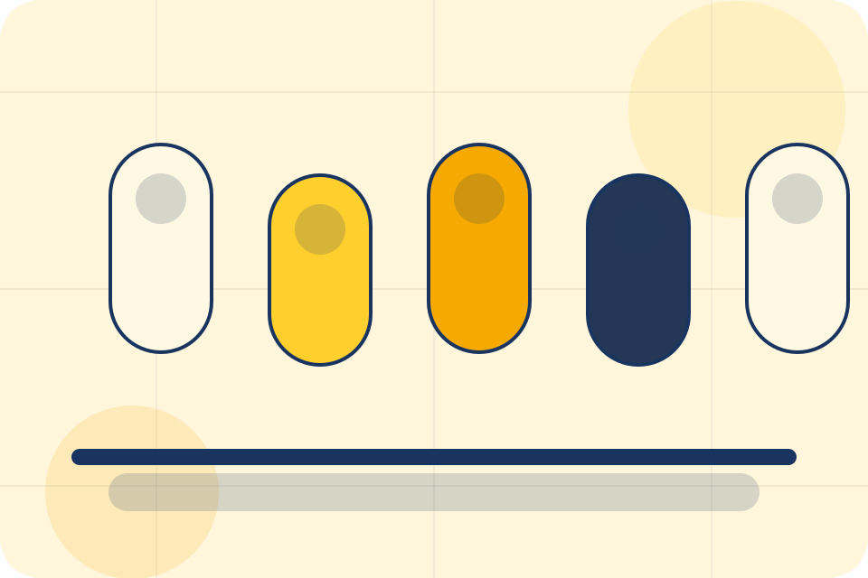
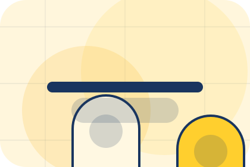
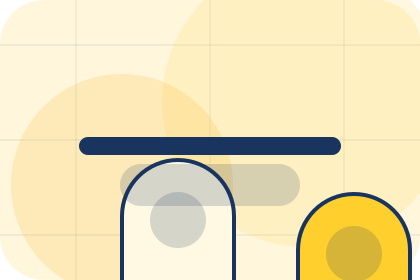
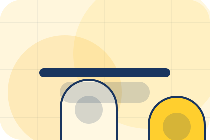
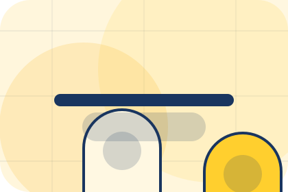
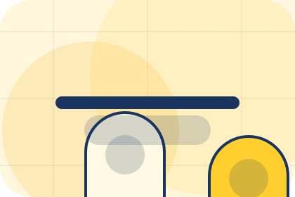
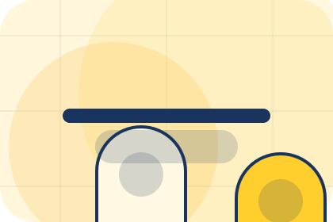
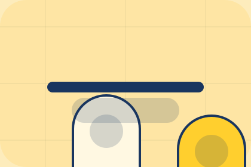

Studio / 01
Studio by Luma
Studio shaped for wellness, personal care & lifestyle services decisions.
Studio opens as a clear wellness decision hub: what Luma offers, who it helps, why it matters, and which route to take first.
The first screen combines positioning, proof, primary action, and fast internal navigation, so people can act immediately or compare the rest of the studio route with context.
Clear intakeHuman follow-upPractical reassurance
Product routine hero
Choose a starting profile
Select the closest route and Luma keeps the next step, proof, and follow-up expectation aligned with personal improvement and reassurance.

Studio / 02
Story
Story adds care context to the studio route, using the routine commerce shelf structure to support personal improvement and reassurance before visitors choose a next step.
Luma uses supplement capsule cards and focused copy to make the decision easier to scan, aligning the section with personal improvement and reassurance rather than filling space.
Explore StudioLuma structures story around context, judgment, and a clear next route so visitors can compare the block quickly before they book a consultation.
Book ConsultationStudio / 03
Philosophy
Philosophy adds care context to the studio route, using the routine commerce shelf structure to support personal improvement and reassurance before visitors choose a next step.
Luma uses supplement capsule cards and focused copy to make the decision easier to scan, aligning the section with personal improvement and reassurance rather than filling space.
Explore Studio

Context
Philosophy gives the page a specific angle instead of repeating the navigation label.
Studio / 04
Expertise
Expertise adds care context to the studio route, using the routine commerce shelf structure to support personal improvement and reassurance before visitors choose a next step.
Luma uses supplement capsule cards and focused copy to make the decision easier to scan, aligning the section with personal improvement and reassurance rather than filling space.
Explore StudioContext
Expertise gives the page a specific angle instead of repeating the navigation label.

Judgment
The supplement capsule cards show what to compare, what to avoid, and what matters most for wellness, personal care & lifestyle services visitors.
Direction
The final cue points to a useful internal route so the section keeps the journey moving.
Studio / 05
Values
Values adds care context to the studio route, using the routine commerce shelf structure to support personal improvement and reassurance before visitors choose a next step.
Luma uses supplement capsule cards and focused copy to make the decision easier to scan, aligning the section with personal improvement and reassurance rather than filling space.
Explore StudioValues gives the page a specific angle instead of repeating the navigation label.
The supplement capsule cards show what to compare, what to avoid, and what matters most for wellness, personal care & lifestyle services visitors.
The final cue points to a useful internal route so the section keeps the journey moving.
Studio / 06
Atmosphere
Atmosphere adds care context to the studio route, using the routine commerce shelf structure to support personal improvement and reassurance before visitors choose a next step.
Luma uses supplement capsule cards and focused copy to make the decision easier to scan, aligning the section with personal improvement and reassurance rather than filling space.
Explore StudioContext
Atmosphere gives the page a specific angle instead of repeating the navigation label.
Judgment
The supplement capsule cards show what to compare, what to avoid, and what matters most for wellness, personal care & lifestyle services visitors.
Direction
The final cue points to a useful internal route so the section keeps the journey moving.
Studio / 07
Standards
Standards gives the proof layer for studio: standards, evidence, and reassurance that make the next decision feel grounded.
Instead of relying on vague claims, Luma presents visible standards, process cues, and proof artifacts that help wellness visitors judge fit.
Explore StudioEvidence
Visible proof that helps visitors believe the claims behind standards.
Standard
The quality, safety, or operating expectation this section makes explicit.
Reassurance
What becomes clearer before someone decides whether to book a consultation.
Studio / 08
Care
Care adds care context to the studio route, using the routine commerce shelf structure to support personal improvement and reassurance before visitors choose a next step.
Luma uses supplement capsule cards and focused copy to make the decision easier to scan, aligning the section with personal improvement and reassurance rather than filling space.
Explore Studio

Context
Care gives the page a specific angle instead of repeating the navigation label.
Studio / 09
Trust
Trust gives the proof layer for studio: standards, evidence, and reassurance that make the next decision feel grounded.
Instead of relying on vague claims, Luma presents visible standards, process cues, and proof artifacts that help wellness visitors judge fit.
Explore StudioEvidence
Visible proof that helps visitors believe the claims behind trust.
Standard
The quality, safety, or operating expectation this section makes explicit.

Reassurance
What becomes clearer before someone decides whether to book a consultation.
Studio / 10
Book Consultation
Luma closes the studio route with a clear action, a quick reminder of the value, and a low-friction way to book a consultation.
Visitors who are ready can use the primary action. Visitors who are still comparing can scan the section links, proof, and support routes before they book a consultation.
Book ConsultationThe final block keeps the choice simple: act now, compare one more proof route, or send enough detail for a focused response.
Book Consultationpersonal improvement and reassurance
Book Consultation
A routine-first wellness shop with offer strip, product education, rounded capsules, and evidence-led reassurance. Studio ends with a direct path to book a consultation, plus enough context for visitors who still need to compare.

Book ConsultationNotes
Information is provided for planning and should be reviewed for the final client, location, and operating rules.